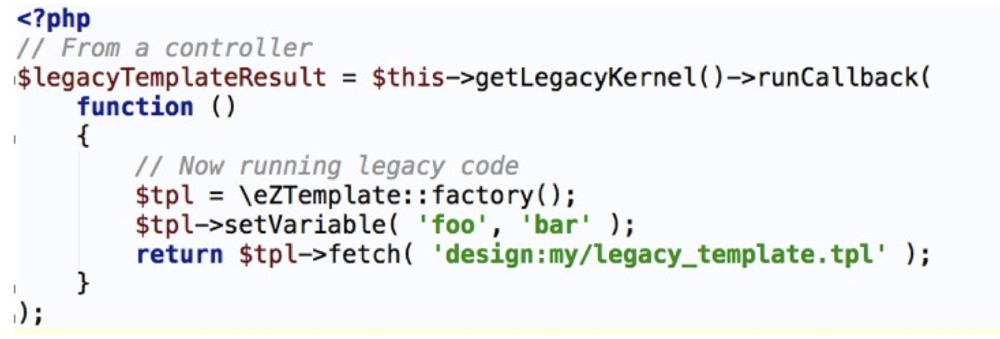
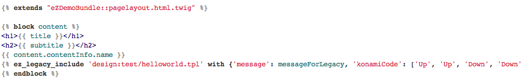

Quand eZ Publish rencontre
Symfony2
PHP Tour Nantes 2012
#phptournantes
Clever Age
Paris, Bordeaux, Lyon, Nantes, et Genève
Environ 100 Collaborateurs

Mais c'est quoi eZ Publish ?
« Une plateforme de choix pour gérer tout type de contenu, venant de tout type de source et le distribuer sur n'importe quel support »
Gabriele Viebach - CEO eZ Systems
- Créée en 1999
- Implantations en France, UK, Allemagne, Japon, ...
- Environ 130 employés
- CMF Open Source développé en... PHP !
- Hautement extensible
eZ Publish 4
Etat des lieux
Basé sur PHP4
(Pauvre en concepts de POO, variables globales, ...)
API plutôt faible
(Difficile à prendre en main, doc inexistante, ...)
AUCUN TEST !
(Ni unitaires, ni fonctionnels :()

eZ Publish 5
Pourquoi une nouvelle version ?
Scalabilité & Performance
- Gestion du cache
- Ajout du support NoSQL
- Refactoring du Core
- Ajout de tests unitaires et fonctionnels
Simplifier la maintenance
- Doublons dans le code
- Séparer la logique et la vue
- Abstraction SQL
- Gestion des exceptions
Rattraper son retard
- Bénéficier des améliorations de PHP 5.3
- Utilisation des nouveaux outils PHP
- Essayer d'inverser la tendance du marché
Requirements
- Système devant s'intégrer à l'existant
- HMVC (Hierarchical Model View Controller)
- Composants découplés
- Injection de dépendance
- Moteur de template éprouvé
- Extensible, fiable, et open source
Rien que ca...
Requirements
- Système devant s'intégrer à l'existant
- HMVC (Hierarchical Model View Controller)
- Composants découplés
- Injection de dépendance
- Moteur de template éprouvé
- Extensible, fiable, et open source
- Rétro-compatibilité !
Symfony 2 Framework
Ok, mais quel composant ?
Symfony 2 Framework
Attrapez les tous !
- BrowserKit
- ClassLoader
- Config
- Console
- CssSelector
- DomCrawler
- EventDispatcher
- Finder
- Form
- HttpFoundation
- HttpKernel
- Locale
- Process
- Routing
- Security
- Serializer
- Templating
- Translation
- Validator
- Yaml
eZ Publish 5
En route pour le Kilimanjaro !
| eZ Publish 4 | eZ Publish 5 |
| (Content) object | Content |
| (Content) class | Content Type |
| (Content) attribute | Field |
| (Content) class attribute | Field Definition |
| Data type | Field Type |
| Node | Location |
| (Content) class group | Content Type Group |
| eZ Publish 4 | eZ Publish 5 |
| Module | Controller |
| Module view | Controller action (method) |
| Fetch | Sub request (render) |
| Template operator | Filter + function |
| Template function | Tag |
| Extension | Bundle |
| ObjectState | ObjectState |
eZ Publish 5.x meta repository: https://github.com/ezsystems/ezpublish5
eZ Publish 5.x Core:https://github.com/ezsystems/ezp-next
eZ Publish 4.x “LS” repository:https://github.com/ezsystems/ezpublish
- ezpublish
- ezpublish_legacy
- src
- vendor
- composer
- doctrine
- ezsystems
- ezpublish
- symfony
- twig
- zetacomponents
- web
- doc
- eZ
- Publish
- API
- Core
- SPI
- Publish
Backward Compatibility
Ouat is ze fuque ?
Requirements
- Même modèle de données
- Inclusion d'anciens templates
- Utilisation d'anciens templates
- Routing Fallback
- Settings
- Accès aux services Symfony

Exposé grâce à un service
Le tout fonctionne grâce aux closures introduites dans PHP 5.3
Communication entre le nouveau et l'ancien système
Utilisable grâce à un Twig Operator
Fallback du nouveau vers l'ancien système
La requète est redirigée automatiquement...
Pour activer la nouvelle route, il suffit... de la créér !
API'S
Le coeur du système !
Créée à base d'interfaces...
Permet de faire abstraction de la couche de bas niveau d'eZ
Permet de faire toutes les manipulations existantes sur les différents objets
Permet de faire le lien entre développement et la Public API.
Supporte XML et JSON
GET /content/objects: liste les objets
POST /content/objects: créé un nouvel objet
DELETE /content/objects/x: supprime un objet X
PATCH /content/objects/x: modifie un objet X
eZ Publish 5.x
Hit the road Jack...
En cours d'implémentation...
- Information Collectors
- Workflow
- Notifications
- GUI's
- Performance
- Scalability
Est-ce que je peux quand même l'utiliser?
Il ne faut pas oublier de distinguer 2 cas...
Questions ?